Filters for Edge Detection
Detecting edges is detecting areas where the pixel values change abruptly, corresponding to the magnitude of the gradient at that pixel. The filter uses the kernel matrix [[-1, 1]] and [[-1], [1]], derived from the derivative: f_x(x, y) = (f(x + 0.5, y) - f(x - 0.5, y)) and the same for f_y. These kernels are convolved with the image to get the x and y components of the gradient. We then take the euclidean norm between the x and y components to get the magnitude. To obtain an output in terms of either zeros or ones, I used a threshold as a cutoff value to determine if the pixel was part of an edge or not. To do this, I normalized the gradient magnitude image and compared to the threshold with abs(img[i][j]) < 3 * threshold. I found that normalization was important for filters that might scale up the pixel values.
To improve the edge detection, I used a gaussian blur which can be convolved with both the finite difference x and y filters to get the difference of gaussian filter. This is useful because it removes the high frequencies/details that might accidently be detected as edges. One difference between the filters is how convolving with a gaussian first makes the edges less sharp. Then the gradient's magnitude is less, and I had to adjust the threshold to be lower. In the previous filter, I used a threshold of 0.8, where all values above 3 * 0.8 were set to 1. In this one, I adjusted the threshold to 0.5.
Below on the left is the output using the finite difference filters and one the right is with the difference of gaussian filters. We can see that there is a difference in the bottom of the images. The finite difference filter picks up the high frequencies and details that come from the grass, which blurring the image with a gaussian suppresses these frequencies. So in the difference of gaussian image, the high frequencies of the grass are not captured. Another visible difference is the edge width captured. Since we are blurring the images, it would make sense that locally around an edge, the pixels would pick up a similar gradient as their neighbors.
The same result is achieved whether applying a gaussian blur to the image then finite difference filter or convolving the fd filter with a gaussian filter to obtain first, then applying the image. This is because convolution is associative.
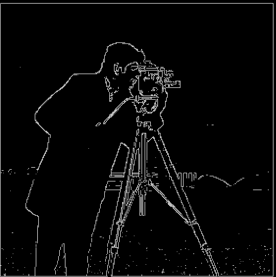
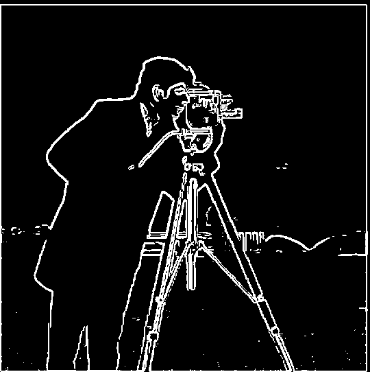
Image Sharpening
To sharpen an image, I convoluted a gaussian filter with the image and subtracted the result from the original image to get the high frequencies. Then the high frequences are multiplied by some scalar value and added back to the original to get more detail. On the left is the original, and the right is the sharpened image:
 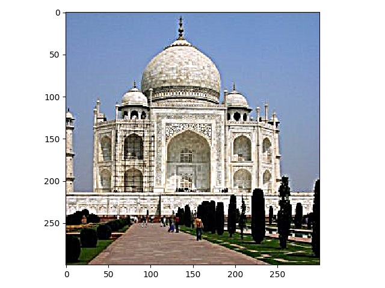
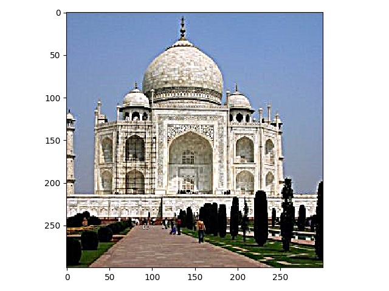
 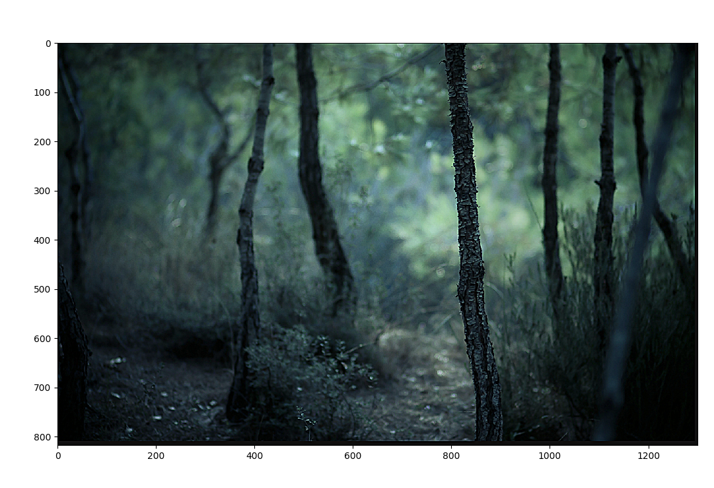
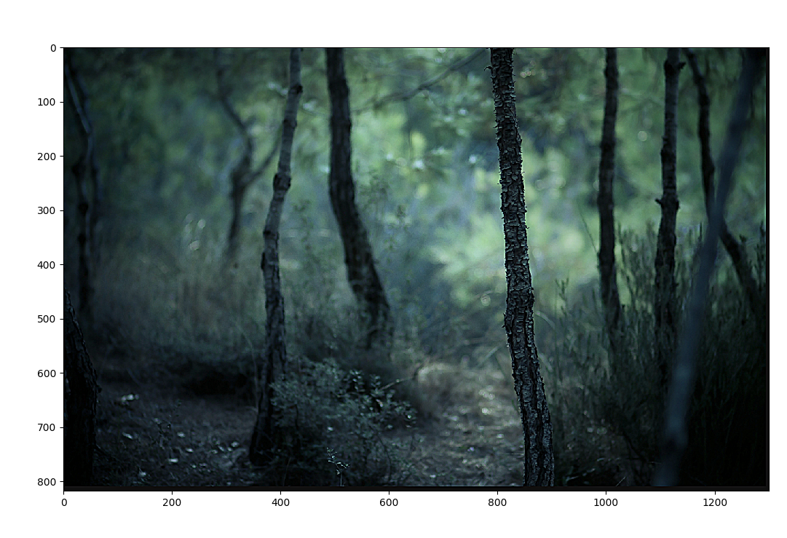
Hybrid Images
To get a hybrid image, I convoluted one with a gaussian filter and the other with the identity filter minus the gaussian filter (Laplacian filter). The two images are added together to get a hybrid image. As for choosing the threshold, I found that having a higher standard deviation for the Laplacian filter was more effective in bringing out the details of the high frequency picture.
In the frequency image, the cat image has a strong star shaped frequency because of the rotated image. The sharp edges in the image contribute to the amplitude. The same can be said about the derek picture because of the band at the top. Taking the hybrid image results in a frequency domain image that looks like an average of the previous two.
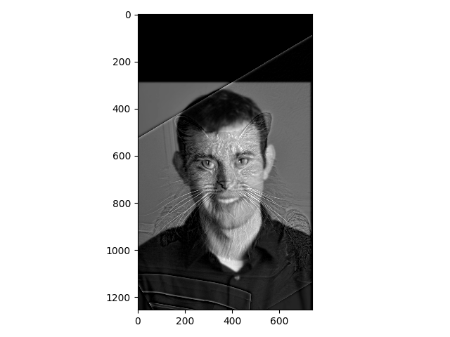
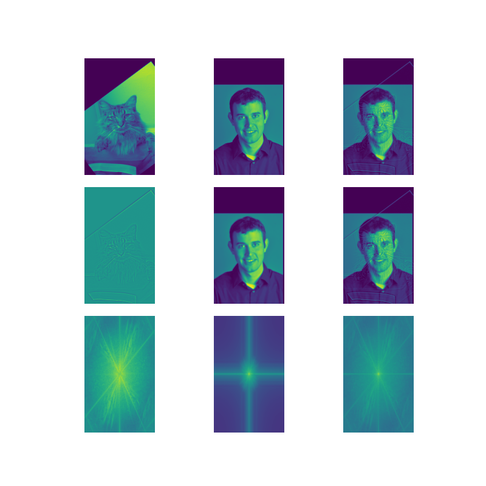
One failed example is a blending between a panda and bear. One problem that can make the hybrid less convincing is if the edges do not line up well:
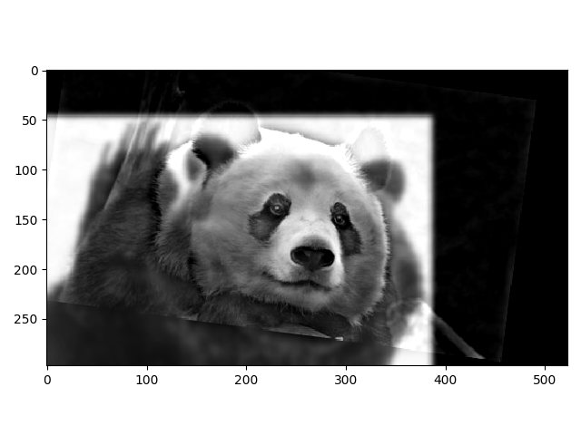

Here is a more successful hybrid which is between a tennis ball and orange. This works well because the edges line up well:
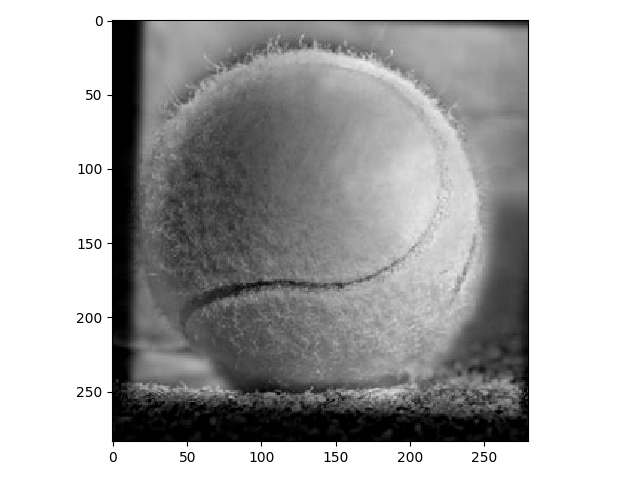
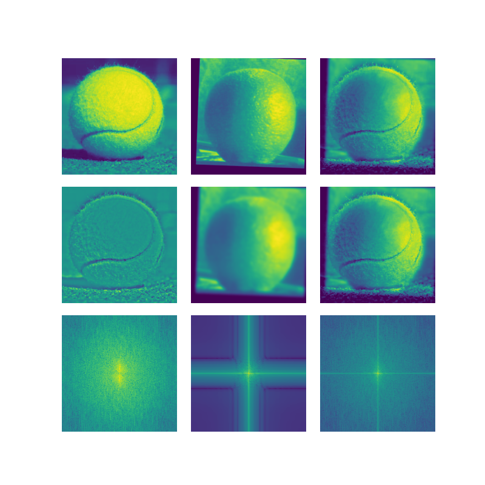
Gaussian and Laplacian Stacks
The gaussian stack is obtained by repeating the gaussian convolution with the previous image and doubling the standard deviation of the gaussian at each level. I chose a standard deviation of 1 for the first level after the original image and a kernel size of 6 * the standard deviation to ensure that values outside the kernel would be close to 0. As for the Laplacian stack, this is obtained by taking the pairwise difference of the an image in the Gaussian stack and the next image. This gives an image that captures a certain band of frequencies at each level. For both the Laplacian and Gaussian stacks, the last image contains a collection of the lowest frequencies of the image.
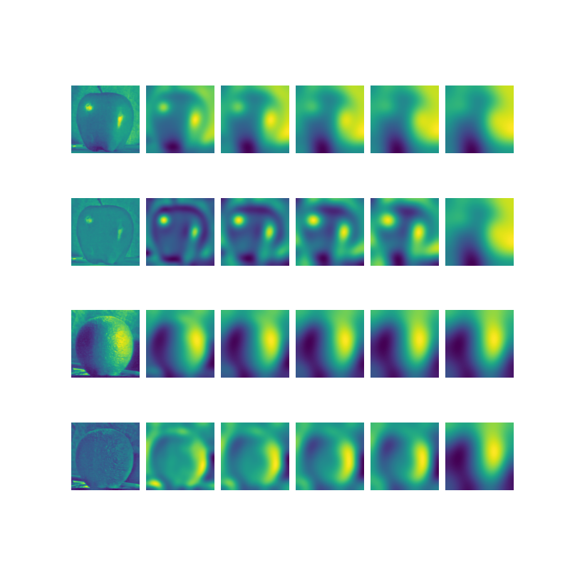
Multi-Resolution Blending
To get a seemless blend of two images, both images are alpha blended at each level given by their Laplacian stacks. This ensures that a good window can be found to prevent ghosting (when the window size is too big for the frequencies) or cropping of major details (when the window size is too small for the given frequencies). Blending at each level ensures that a good window size is chosen for the set of frequencies at each level. To get the blend at each level, a Gaussian stack of the image mask is used, which provides a larger window for the lower frequencies and a smaller window for the higher ones. A diagram of the blending at each level is shown below along with the gray and colored blend:
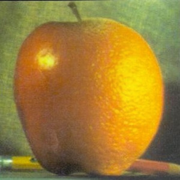
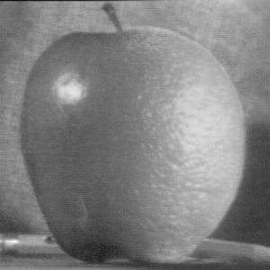
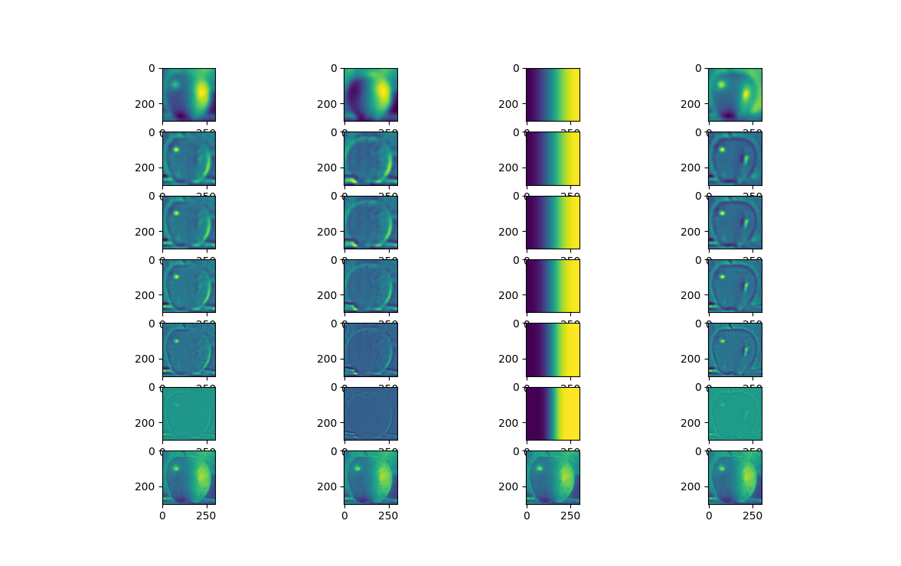
Here is an attempt at putting leaves on a tree with an irregular mask:
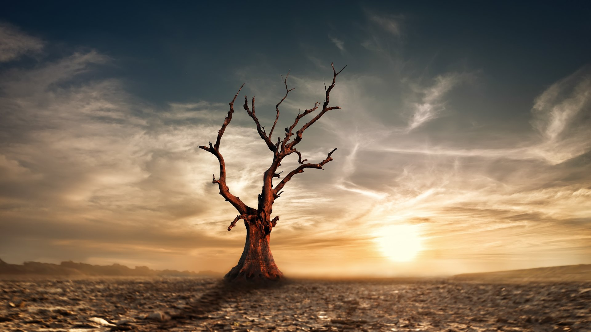
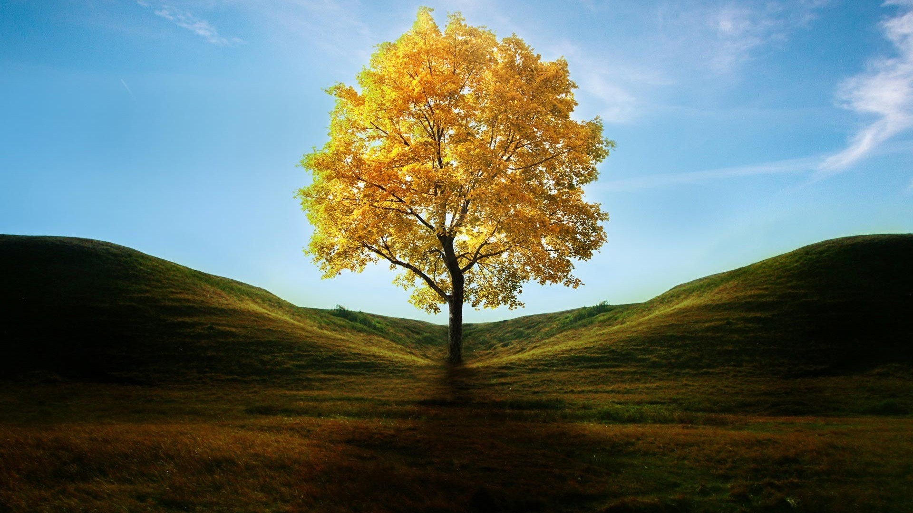
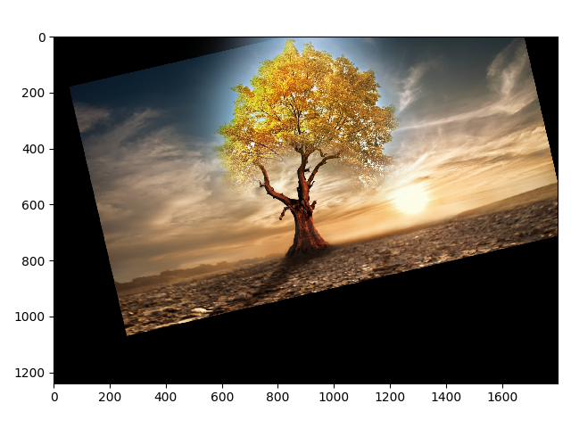
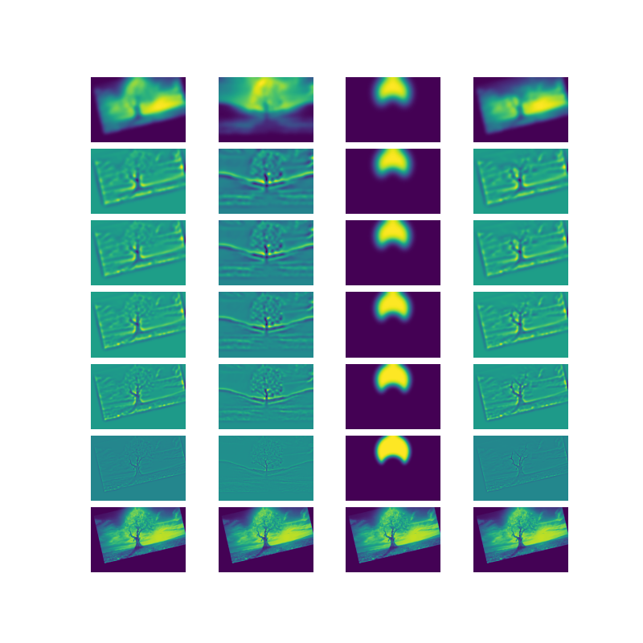
Finally, here is a combination of a donut and bagel:

 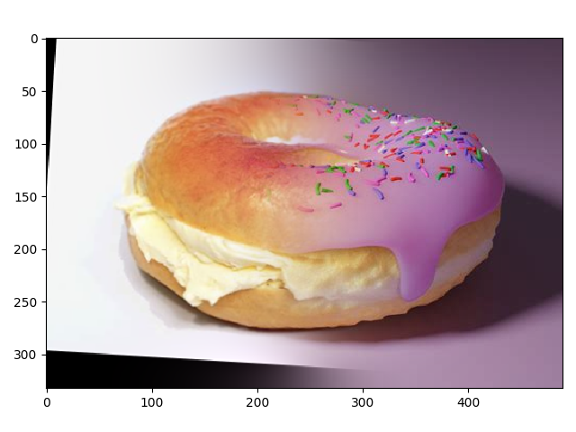
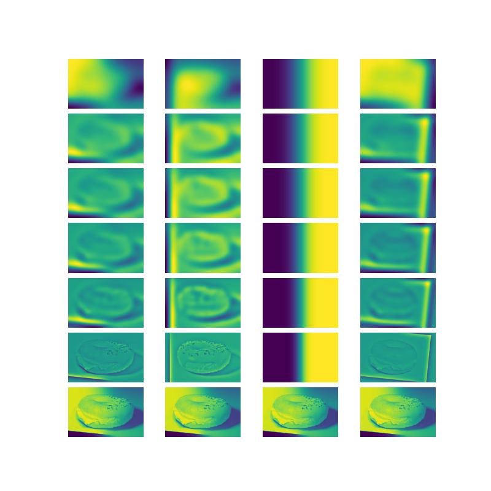
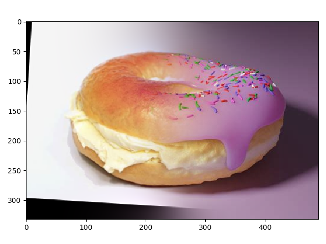
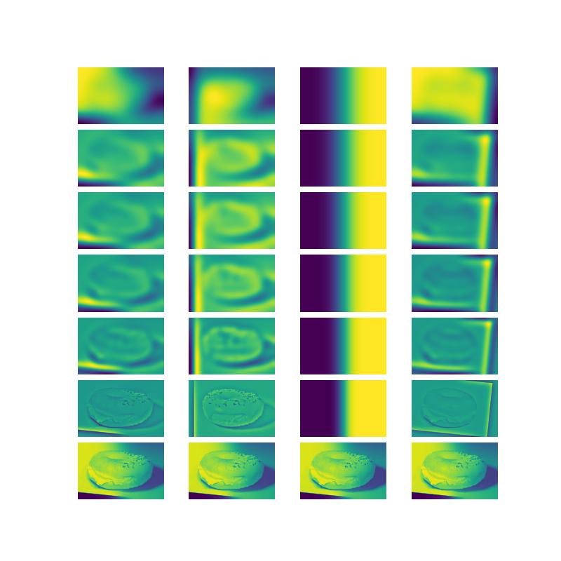